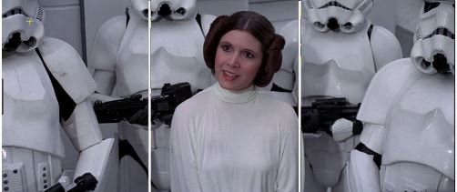

Staging
Staging is one of the 12 Basic Principles of Animation and, oftentimes, is overlooked by animators and unnoticed by audiences. But it is a powerful tool that can inform an audience about character and narrative. Staging is connected to acting, timing, cinematography, and setting. When an animator understands staging, he or she controls the attention of the audience and helps drive the story.
Here are 3 tips on staging that will help you with your shot.
1. Halves and Thirds
One easy technique keeps the characters of interest in the a half or third of the camera frame. If you divide a frame of the shot in half or thirds and place the character in those sections, you control the attention of the audience while communicating the importance of that character.
This is a shot from Star Wars.
With Princess Leia in the middle third, our attention is focused on her. At this point in the story she is communicating important information about the Empire and about her character. So the staging allows us to pay better attention to what she is saying. She is also surrounded by stormtroopers which tells us that she’s in trouble.
2. Lines of Focus
By using sets, other characters, and camera angles, one can create lines of focus that can draw the attention of the audience where you intend it to be.
Here all the pilots have their eyeline toward Princess Leia, thus drawing our attention to her. It tells us that she is saying something important.
She is also dressed in white, while being surrounded by orange and framed by the 2 foreground pilots. This draws our attention to her, so we pay attention to what she is saying.
3. Consistent Screen Direction
Screen direction is the direction that a character appears to be moving or speaking. Having a consistent screen direction is important to convey information to your audience clearly.
This sequence is an important conversation between Luke and Obi Wan. To avoid confusion, the screen direction of both characters remains constant throughout the sequence. Luke is always on screen right while Obi Wan is always on screen left even when only one of them is on screen. This simple technique keeps the audience from becoming disoriented and distracted during this conversation.